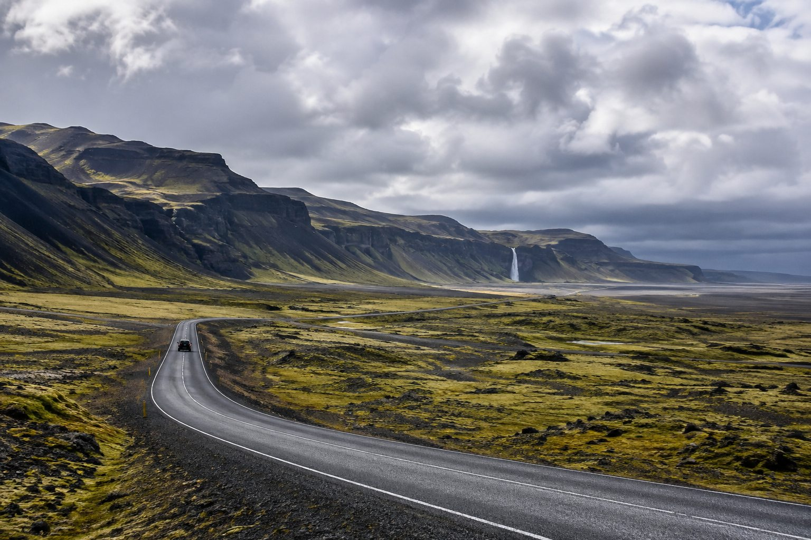
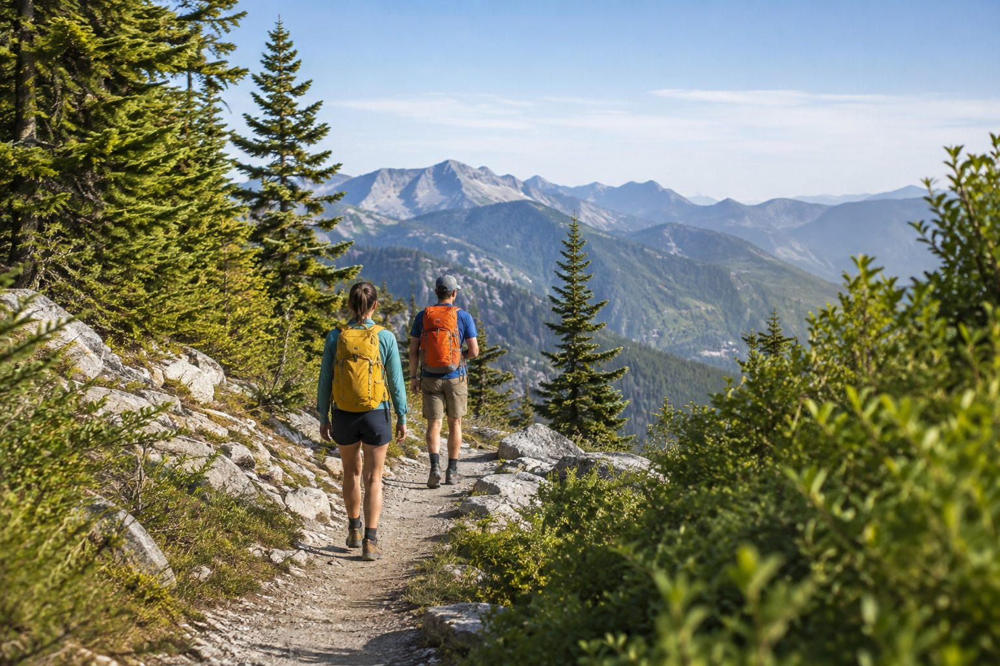

Road Trips & Outdoors
Road Trips & OutdoorsHow to Plan Your First Long-Distance Road Trip
Plan distances, rest stops, fuel and overnight stays without scheduling every hour.
Fresh road trips & outdoors stories and practical ideas from Tripnoria.

Memorable American drives featuring coastlines, mountains, deserts and spacious national landscapes.
Read the story →Road Trips & OutdoorsPlan distances, rest stops, fuel and overnight stays without scheduling every hour.
 Road Trips & Outdoors
Road Trips & OutdoorsAccessible park ideas and practical planning advice for travelers new to national-park trips.
 Road Trips & Outdoors
Road Trips & OutdoorsA guide to choosing short coastal routes with viewpoints, small towns and time outside the car.
 Road Trips & Outdoors
Road Trips & OutdoorsA straightforward packing list for a safe, comfortable weekend outside without hauling unnecessary gear.

Road Trips & OutdoorsA practical route-planning guide for Iceland’s weather, distances, waterfalls and remote overnight stops.

Road Trips & OutdoorsSimple steps for choosing a trail, checking conditions and carrying the essentials for a good first hike.